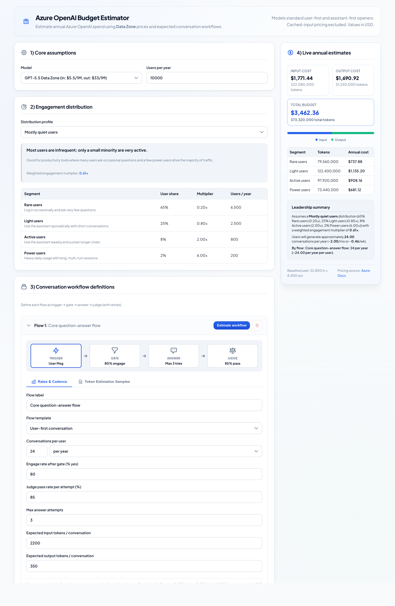
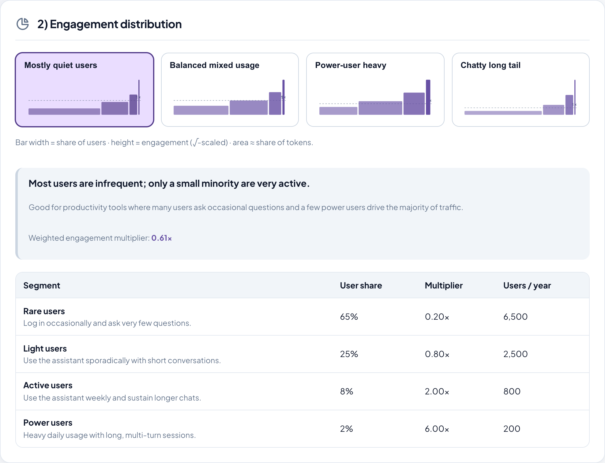
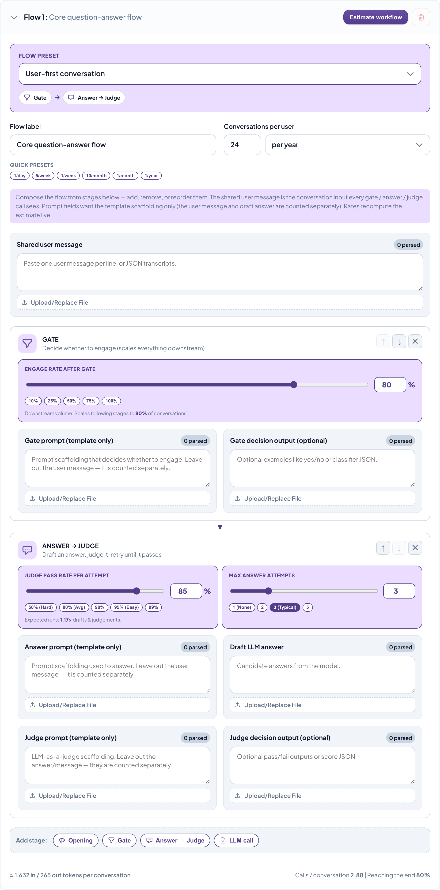
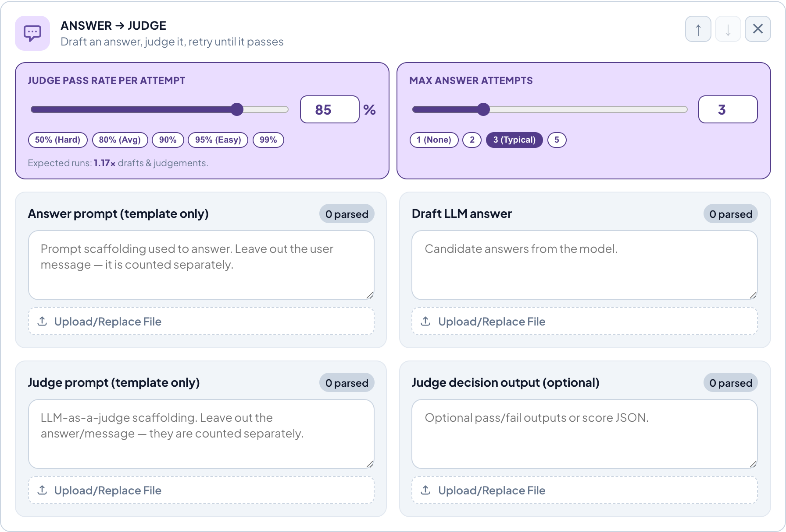
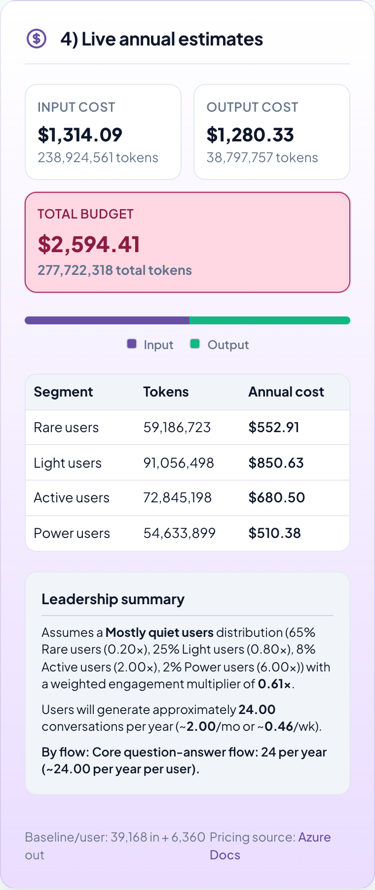

This calculator replaces the usual "guess the average tokens per call" with something grounded: paste representative prompts and messages, and it projects annual token usage and dollar cost across your entire user base — live, in the browser.

A yearly LLM bill is just one multiplication chain. The hard part is that every term in it is usually a guess. The estimator pins down each term with a concrete, inspectable input:
The four numbered sections of the app each nail down one part of that chain. The rest of this tutorial walks them in order.
Pick the model (each carries its Azure Data Zone input/output price per
million tokens) and the number of users per year. These set
price_per_token and users.
src/lib/models.ts).
Cross-check the live Azure pricing page
before quoting a figure to anyone.
Real user bases are not uniform: a handful of power users can dwarf everyone else. Instead of one "average user," you choose a distribution that splits your population into segments, each with a share of users and a usage multiplier. The app allocates whole users to each segment and computes a weighted multiplier for the whole base.

Four presets ship in src/lib/distributions.ts
(mostly-quiet, balanced, power-user-heavy, chatty long-tail). Shares always sum to
100%, and users are allocated with a largest-remainder method so the segment counts
stay integer-exact.
A conversation is rarely a single API call. The app models it as a pipeline with a gate and a retry loop — the part that makes token counts realistic:
engageRate). Out-of-scope messages stop here.maxAnswerAttempts times.
This is the heart of the tool. Under Token Estimation Samples, each stage of the pipeline has a field. Paste text (one sample per line) or a JSON transcript, or upload a file. The badge on each field shows how many samples were parsed.

Split into one sample per non-empty line. Blank and whitespace-only lines are dropped before counting.
Arrays/objects are flattened by pulling text from known keys
(content, text,
prompt, …). Envelope fields like
role and id are ignored, so
structure never inflates the token count.
js-tiktoken using the o200k_base
encoding — the exact tokenizer used by OpenAI's GPT-4o → GPT-5 and o-series models.
The app averages tokens across your samples per stage, then hands those averages to
the workflow model.
Press Estimate workflow and the per-conversation input/output token figures update from your samples, ready to roll up into the annual estimate.
Because the answer→judge loop retries, "calls per conversation" is not a whole number. The expected number of answer attempts when engaged follows a truncated geometric expectation:
Here is a fully worked, hand-checkable example. Assume these per-sample token averages and rates (small numbers chosen so you can follow along):
| Stage | calls | input tokens each | contribution |
|---|---|---|---|
| Gate (evaluation) | 1 | user 3 + prompt 5 = 8 | 8.000 |
| Answer | 0.875 | user 3 + prompt 3 = 6 | 5.250 |
| Judge | 0.875 | prompt 9 + user 3 + draft 9 = 21 | 18.375 |
| Total input | 31.625 |
| Stage | calls | output tokens each | contribution |
|---|---|---|---|
| Gate decision | 1 | 1 | 1.000 |
| Answer (draft) | 0.875 | 9 | 7.875 |
| Judge decision | 0.875 | 1 | 0.875 |
| Total output | 9.750 |
These exact numbers are asserted in
src/lib/messageTokenCalculation.test.ts against the real
tokenizer — the tutorial and the test agree by construction.
The right-hand panel updates on every keystroke. Per-conversation tokens are multiplied by conversations-per-user, by users, and by each segment's engagement multiplier, then priced — giving annual input, output, and total cost plus a per-segment breakdown.

bun run dev (or npm run dev), then open the printed URL.samples/ folder (see samples/README.md for the mapping).